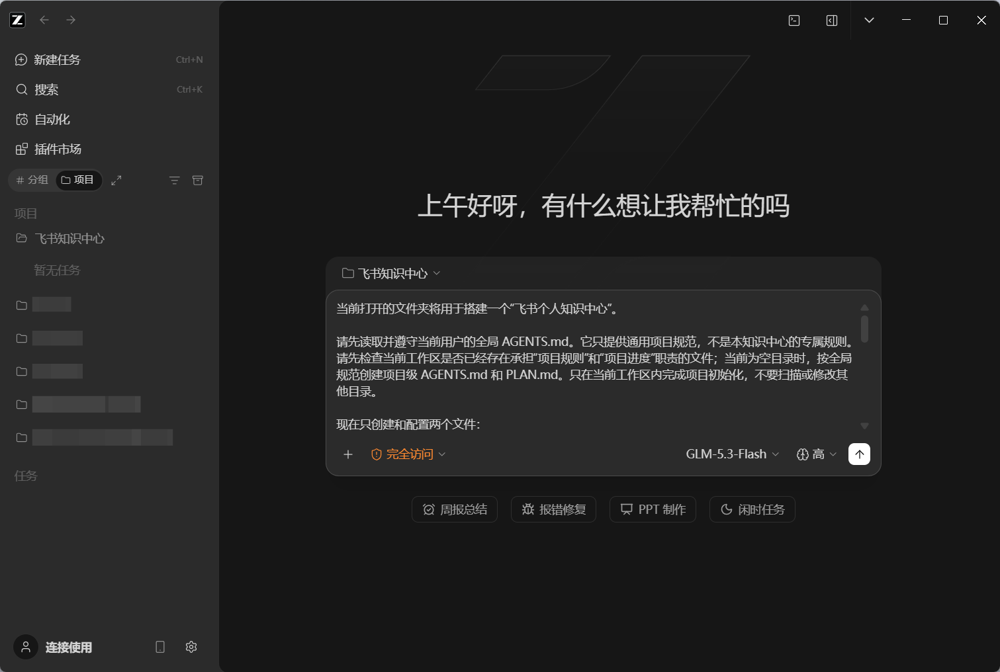
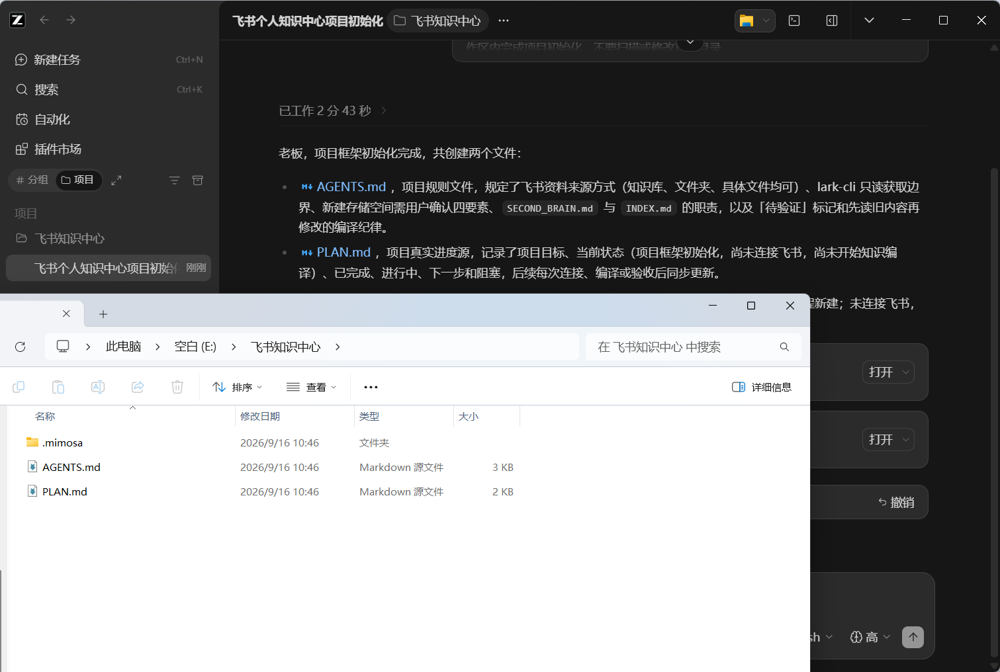
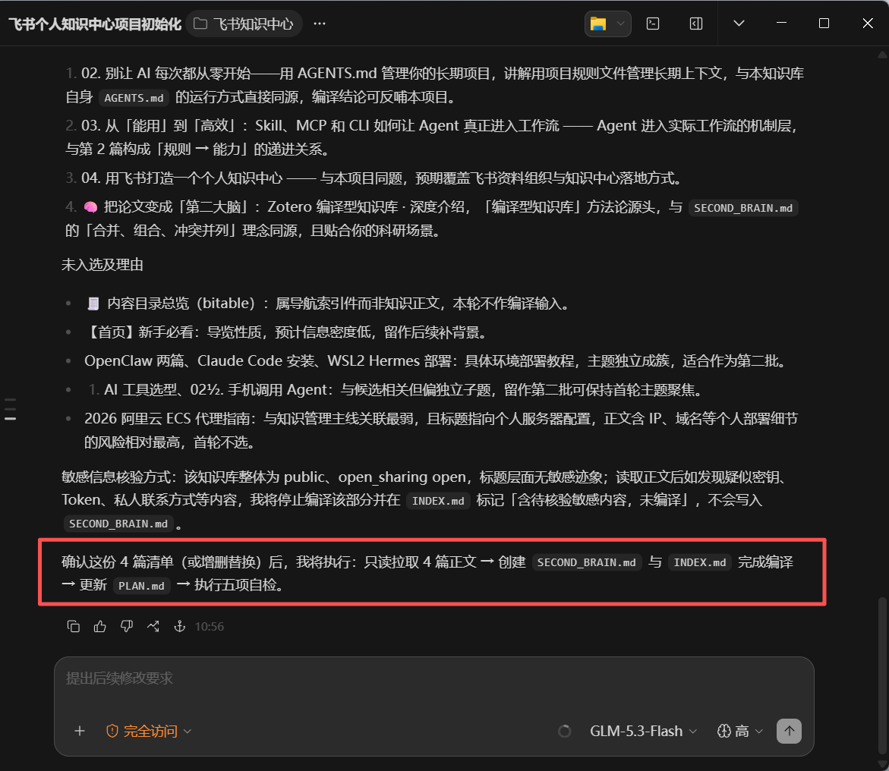
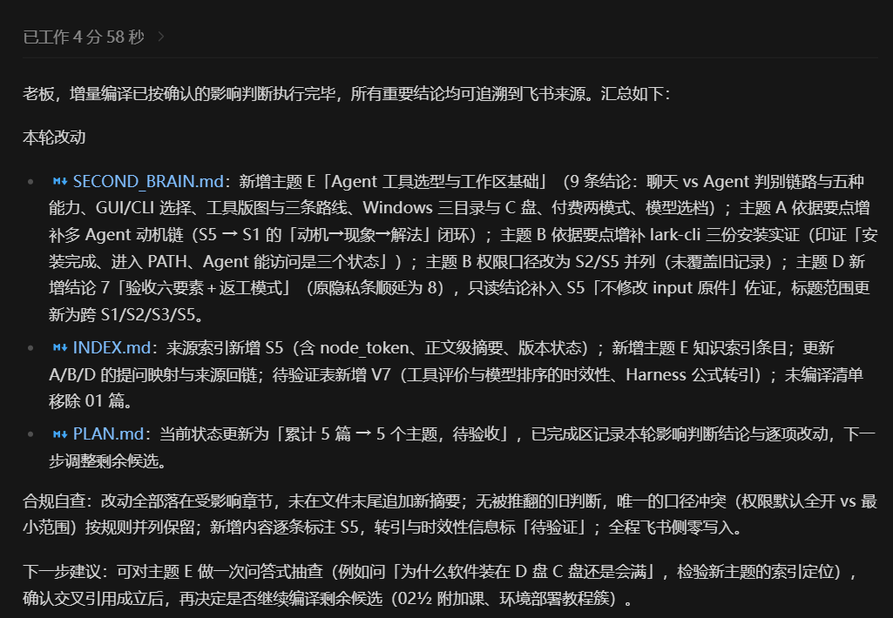
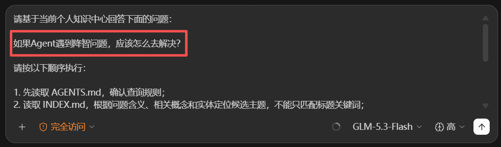
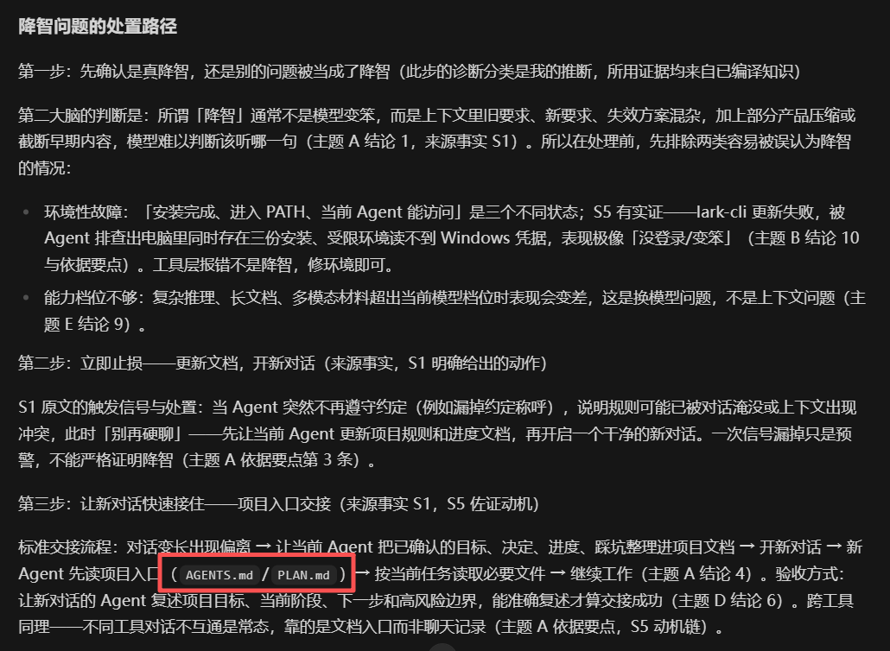

展开本页目录
本页已同步飞书课程修订号 143 的公开正文与配图，无需登录飞书即可阅读。飞书原文仅作为来源与版本核对入口。
查看飞书来源 ↗🧠 一、AI 时代，信息已经不只是给自己看的了
学生时代，我们为什么要记笔记？
因为人的记忆有限。课堂上听懂了，不代表一个月后还记得；今天突然想通的问题，如果不及时写下来，过几天可能就只剩一句模糊的“我好像在哪见过”。
记笔记的本质，是把短暂的理解变成可以反复查看、继续加工的东西。
到了 AI 时代，这件事反而变得更重要了。
新的工具、产品和方法变化得越来越快，我们不可能把所有信息都塞进脑子里。而且现在的信息不只是要留给未来的自己看，还要留给 AI 看。
这就是我为什么想搭一个个人知识中心。
它不是一个专门收藏链接的仓库，也不是为了制造“我保存了很多资料”的满足感。它真正要解决的是：
把散落的资料、经验和判断沉淀下来，变成自己能回看、AI 也能读取的长期上下文。
今天的大语言模型拥有很强的通用能力，但它不会天然知道你是谁、你正在做什么项目、你过去试过哪些方案，更不知道哪些判断已经被你验证过。
这也是为什么，不同的人使用同一个 AI，最后得到的结果可能完全不一样。
差别不只来自一句提示词写得漂不漂亮，更来自你有没有给它足够清楚的任务背景、规则、案例和验收标准。
比如，你让 AI 做一个 HTML 网页，只说一句：
帮我做一个网页。它当然也能做，但大概率只能根据通用经验猜：页面给谁看、需要什么内容、喜欢什么风格、有哪些参考案例、最后怎样才算合格。
如果你同时给它明确的需求、相关 Skill、真实案例、视觉偏好和验收标准，它面对的就不再是一道只能靠猜的题，而是一项上下文完整的任务。
这里也要强调一个边界：不是扔给 AI 的信息越多越好，而是上下文越相关、越清楚、组织得越合理，AI 才越容易把事情做好。
所以，个人知识中心真正沉淀的，不应该只有原始资料，还应该包括：
- 这份资料从哪里来；
- 它解决了什么问题；
- 哪些结论已经验证过；
- 哪些内容只是暂时判断；
- 以后遇到什么任务，可以再次调用它。
过去，笔记主要是人的外部记忆。
现在，它还可以进一步成为人与 AI 共用的上下文基础设施。
☁️ 二、为什么这次选择飞书？
能做知识管理的工具非常多。本地 Markdown、Notion、Obsidian，甚至普通文件夹都可以搭知识库。
我这次选择飞书，不是因为它是唯一答案，而是因为它在普通人的使用门槛、工作场景和 Agent 操作能力之间，形成了一个很实用的平衡。
💼 1. 学完以后，可以直接带进工作
飞书本身就是很多公司正在使用的办公平台。
你在这里学会的不只是“怎样记一篇笔记”，而是怎样围绕云文档、知识库、表格、任务和其他工作对象组织信息。这套方法以后进入真实工作场景，仍然有机会继续使用，而不是课程结束就换一套完全不同的系统。
同时，飞书也支持普通个人用户使用。你不需要先成为某家公司的员工，才能开始搭自己的知识中心。
📱 2. 它天然适合跨设备记录和读取
飞书有桌面端、网页端和移动端，云文档也支持多端同步。
这意味着，你在电脑前整理的内容，之后可以在手机上继续查看；临时想到一个信息，也可以先记录下来，回到电脑前再交给 Agent 处理。
从使用体验上看，它间接解决了本地文件最麻烦的问题之一：你不需要手动把同一份资料在多台设备之间搬来搬去。
当然，这不代表飞书里的所有信息都应该无条件交给 AI。账号权限、单位资料、个人隐私和敏感文件，后面仍然需要单独说明边界。
🤖 3. 飞书正在从办公软件变成 Agent 可以操作的工作台
现在的飞书已经不只是聊天和写文档。豆包工作已经原生接入飞书，飞书内部也在逐步提供知识问答、豆包工作伙伴、妙搭等 AI 能力。
更关键的是，飞书还开放了官方的 lark-cli。
配置完成以后，Agent 可以通过命令行读取和操作飞书中的文档、知识库、表格、日历、任务等对象。这样一来，知识中心就不再只能靠人手动新建页面、复制内容和调整结构，Agent 也可以进入这套工作流。
对普通用户来说，并不是飞书里的所有 AI 能力都免费，也不是所有功能开箱即用。部分能力仍然受到套餐、租户开通、应用配置和授权范围限制。
但从我当前的使用条件来看，飞书把高频办公对象、多端访问和 Agent 操作入口放进了同一套产品里，综合门槛已经足够低。这也是本课选择它，而不是再引入一套陌生知识库工具的主要原因。
💻 4. 这套方案目前仍然依赖本地 Agent
这里还要把当前方案的边界说清楚。
这节课不是直接在飞书云端开发一个完整 Agent。现阶段仍然由电脑上的本地 Agent 负责处理任务，通过 lark-cli 调用飞书；飞书主要承担信息的云端承载、读取和同步。
也就是说：
本地 Agent 负责思考与执行
→ lark-cli 负责连接飞书
→ 飞书负责承载和同步知识不过，随着飞书里的 Agent 和 AI 工作能力继续发展，我相信普通用户未来会有机会直接在飞书中完成更多云端 Agent 开发和自动化。
这是我对产品演进方向的期待，不是这节课现在要兑现的功能承诺。
好，为什么要做个人知识中心，以及为什么这次选择飞书，已经说清楚了。
接下来不再继续讲概念。我们会先确认 L02 提供的全局 AGENTS.md 和 L03 介绍的 lark-cli 已经配置好，然后从创建第一个本地文件夹开始，真正把这个知识中心搭出来。
这里先强调一下：L02 的全局 AGENTS.md 不是专门为这个知识中心编写的，也不包含本课的知识编译规则。它提供的是创建任何项目都能使用的基础规范，例如先确认工作区边界、识别已有项目文件，以及在项目缺少规则和进度入口时，默认补齐项目级 AGENTS.md 和 PLAN.md。
🧰 三、开始之前，你需要准备什么？
这一课不是从零安装所有工具。
它是前面三节课的最终组合：
- L02 提供全局
AGENTS.md，让 Agent 在任何项目中都遵守通用工作规范，并在项目缺少规则和进度入口时，默认建立项目级AGENTS.md和PLAN.md；02. 别让 AI 每次都从零开始——用 AGENTS.md 管理你的长期项目 - L03 安装并授权
lark-cli，让 Agent 可以读取飞书；03. 从‘能用’到‘高效’：Skill、MCP 和 CLI 如何让 Agent 真正进入工作流 - 本课通过项目级规则和具体提示词，把本地 Agent、飞书资料与知识编译流程连起来。
正式开始前，请先确认：
- 电脑上已经安装 ZCode；
- 已经按照 L02 配置好用户级全局
AGENTS.md； - 已经按照 L03 安装并授权
lark-cli； - 如果飞书中已有资料，提前想好本次允许 Agent 编译的文件夹、知识库或具体文件；
- 如果飞书中还没有资料，也没有关系，稍后可以让 Agent 先创建一个最简单的云端存储空间；
- 用来测试的资料可以公开，或已经完成脱敏。
ZCode 只是本课选用的操作平台。你也可以换成其他能够读取项目规则、修改本地文件并调用 lark-cli 的 Agent，但界面和操作入口会有所不同。
🗂️ 先分清两层 AGENTS.md
这里很容易混淆。
L02 提供的是用户级全局规则。在 ZCode 中，它通常位于用户配置目录，负责告诉所有项目中的 Agent：你是谁、你习惯怎样工作、哪些安全边界必须遵守，以及新项目缺少规则和进度文件时应该怎样补齐。
本课稍后创建的是当前知识库项目自己的 AGENTS.md。它只负责解释这个项目：飞书资料从哪里来、本地四个文件分别做什么、知识怎样编译、哪些内容不能修改。
所以，全局 AGENTS.md 不直接管理这个知识中心的知识内容。它只是让 Agent 形成一种通用的项目习惯：打开新项目时先确认项目说明和当前进度；没有对应文件时，再创建项目级 AGENTS.md 和 PLAN.md。至于这个知识中心具体如何存储、编译和查询，仍然要写进当前项目自己的文件里。
可以把两者理解成：
全局 AGENTS.md＝适用于所有项目的长期工作规范
项目 AGENTS.md＝这个知识库项目的专属说明书
PLAN.md＝这个知识库项目的动态进度记录它们不是二选一，也不能用同一份内容互相替代。
📁 四、第一步：在电脑上建立一个安全工作区
🪜 目的： 给这个知识库一个独立、可持续维护的本地项目空间。
📍 在哪操作： Windows 文件资源管理器。
⌨️ 怎么做： 在 C 盘以外的数据盘新建文件夹。为了减少中文路径和空格带来的兼容问题，本课推荐：
D:\FeishuKnowledgeBase如果你更喜欢中文名称，也可以使用：
D:\飞书知识库✅ 你应该看到： 一个独立的新文件夹，里面暂时没有其他资料。
🧯 如果不一样： 如果电脑只有 C 盘，可以在自己确定安全的位置建立短路径文件夹，但仍然不要放在桌面或系统目录。不要为了跟教程截图完全一致而移动重要资料。
🏗️ 五、第二步：让 ZCode 把普通文件夹变成 Agent 项目
打开 ZCode，选择刚才创建的文件夹作为工作区，然后新建一个对话。
现在，这个文件夹只是一个空目录。按照 L02 全局 AGENTS.md 中的通用项目规范，Agent 应该先为它建立项目规则和进度入口。我们首先不连接飞书，也不着急生成“第二大脑”，而是先让 Agent 把项目本身说明白。
把下面这段提示词发给 ZCode：
全局规则解决的是“新项目应该有规则和进度文件”，下面的提示词解决的是“这个知识中心的规则和进度具体写什么”。为了让第一次实操的结果更稳定，提示词仍会把两个文件及其职责明确写出来。
💬 提示词 1：初始化知识库项目
当前打开的文件夹将用于搭建一个“飞书个人知识中心”。
请先读取并遵守当前用户的全局 AGENTS.md。它只提供通用项目规范，不是本知识中心的专属规则。请先检查当前工作区是否已经存在承担“项目规则”和“项目进度”职责的文件；当前为空目录时，按全局规范创建项目级 AGENTS.md 和 PLAN.md。只在当前工作区内完成项目初始化，不要扫描或修改其他目录。
现在只创建和配置两个文件：
1. AGENTS.md
- 说明这是一个由本地 Agent 维护、以用户指定的飞书资源作为云端资料来源的个人知识库项目；
- 说明资料可以来自飞书知识库、文件夹或具体文件，不要求预先整理成“知识库”；
- 说明后续通过 lark-cli 获取飞书资料，现有资料默认只读；如果没有现成资料，只有在用户确认类型、名称、位置和可见范围后，才允许新建一个最简单的存储空间；
- 说明本地会使用 SECOND_BRAIN.md 保存编译后的知识，使用 INDEX.md 保存来源映射和语义索引；
- 明确原始飞书资料默认只读，不删除、不移动、不修改权限；
- 明确无法确认的内容必须标记为“待验证”，不能补写成事实；
- 明确修改知识前必须先读取旧内容，不能把新资料无脑追加到文件末尾。
2. PLAN.md
- 记录项目目标；
- 区分已完成、进行中、下一步和阻塞；
- 当前状态写为“项目框架初始化，尚未连接飞书，尚未开始知识编译”；
- 后续每完成一次连接、编译或验收，都要更新该文件。
AGENTS.md 和 PLAN.md 只负责管理项目，不得存放具体知识正文。
完成后请列出创建的文件，并用一句话分别说明它们的职责。不要继续连接飞书，也不要创建其他文件。✅ 你应该看到： 工作区根目录出现 AGENTS.md 和 PLAN.md，前者写规则，后者记进度。


💡 一个看起来普通、实际上非常关键的变化
一些看起来很“高大上”的 AI 原生项目，拆开以后，第一版可能真的只是一个本地文件夹。
让它变成项目的，不是复杂界面，而是文件夹里的标准化信息：
AGENTS.md告诉 Agent 这是什么项目、应该怎样工作；PLAN.md告诉 Agent 目前做到哪里、下一步做什么；- 以后即使打开新对话，或者换一个 Agent 重新打开这个文件夹，它也能先读取项目文件，再接住之前的工作。
但这两个文件还不是“第二大脑”。
它们只是让 Agent 不迷路。真正承载编译知识的是后面要创建的 SECOND_BRAIN.md。
🔗 六、第三步：确定要从飞书的哪里读取资料
本课演示使用的飞书知识库是：
海绵朋克的AI实战经验分享
它是我的真实课程知识库，只是演示案例，不是读者完成课程的前提。你实际操作时，可以根据自己的情况选择三种入口：
- 飞书里还没有资料： 让 Agent 先提出一个最简单的新建方案，经你确认后，再用
lark-cli创建知识库或文件夹； - 已经有飞书知识库： 指定知识库名称或链接，让 Agent 在其中确认本次要读取的内容；
- 资料没有整理成知识库： 直接指定飞书文件夹、文档或文件，也可以开始编译。
第一次连接时，不要直接要求 Agent“把飞书里的资料全部处理掉”。先做诊断、定位和小范围确认。
💬 提示词 2：检查工具并确认飞书资料范围
现在请准备连接飞书，并确认本项目的云端资料范围。
资料模式：B 已有知识库
目标名称或资源链接：海绵朋克的AI实战经验分享
请根据我的实际情况，将“资料模式”改成下面三种之一：
A 新建存储空间
B 已有知识库
C 指定文件夹或文件
如果选择 C，请在“目标名称或资源链接”中列出允许读取的文件夹、文档或文件链接；如果选择 A，请填写希望使用的名称。
请按以下顺序执行：
1. 检查当前环境能否找到 lark-cli，并运行只读诊断；
2. 读取 lark-cli 内置的认证、知识库、云空间和文档相关 Skill 或帮助，不要凭记忆猜命令；
3. 如果模式为 A：只提出一个最简单的新建方案，列出准备创建的资源类型、名称、上级位置和可见范围，然后停止，等我明确确认；未确认前不得创建。确认后只创建这一项资源并回查结果；
4. 如果模式为 B：使用用户身份只读定位目标知识库；没有找到或存在多个结果时立即停止并列出证据，不要自行猜测；
5. 如果模式为 C：只解析我指定的文件夹、文档或文件，列出将要读取的范围，不要自动扩展到上级目录、同级文件或整个云空间；
6. 无论哪种模式，都要记录最终确认的资源名称、类型、唯一标识和可读取内容概览；
7. 除了模式 A 中经我确认的新建动作，本轮禁止创建、修改、移动或删除任何飞书内容，禁止调整成员和权限，也不要在输出中展示凭证、Token 或敏感字段。
最后只向我报告：工具状态、身份状态、资料模式、已确认的读取范围、是否发生经确认的新建动作，以及下一步建议。不要开始编译。✅ 你应该看到： Agent 明确告诉你 lark-cli 是否可用、采用哪种资料模式，以及本次究竟会读取哪些内容。如果选择新建，它必须先给出方案并等待确认，不能直接动手。
🧯 如果不一样： 找不到命令时，先回到 L03 检查安装和 PATH；资料名称有多个匹配结果时，不能让 Agent 自己猜；指定文件夹或文件时，如果它准备读取范围以外的资料，也要立即停止。
⚙️ 七、第四步：搭建最简“编译器”
这里就是整节课最重要的地方。
很多知识库的工作方式是：保存原文，等用户提问时再临时检索几个片段，让 AI 现场拼答案。
卡帕西提出的 LLM Wiki 思路不一样：AI 先把原始资料逐步编译成一套持续维护的知识，再基于已经整理过的知识回答问题。
这节课不照搬他的目录，也不配置复杂 RAG、向量数据库或搜索服务。我们只保留最重要的原则：
本课的最简数据流是：
用户指定的飞书资料
→ lark-cli 只读获取
→ AI 理解、合并、去重、标记冲突
→ SECOND_BRAIN.md
→ INDEX.md
→ 根据用户问题生成回答本地最终只需要四个核心文件：
FeishuKnowledgeBase\
├── AGENTS.md
├── PLAN.md
├── SECOND_BRAIN.md
└── INDEX.md🗃️ 四个文件千万不要混用
文件 | 它负责什么 |
|---|---|
| 规范整个项目，让新对话和新 Agent 知道该怎样工作 |
| 记录做到哪里、下一步做什么、当前有什么阻塞 |
| 保存已经整合、编译后的知识，是知识库的核心 |
| 按来源和正文含义建立导航，帮助 Agent 找到相关知识 |
一个回答“这个项目怎样继续”，另一个回答“我目前知道什么”。
💬 提示词 3：第一次编译第二大脑
第一次不要贪多。先选择 3—5 篇公开、已经脱敏、彼此有一定关联的飞书文档，跑通最小闭环。
现在开始第一次知识编译。
请先读取当前项目的 AGENTS.md 和 PLAN.md，确认文件职责和安全边界。已经确认范围的飞书资料是原始资料来源，默认只读；本地文件才是本轮允许写入的目标。
请从已经确认的飞书资料范围中选择 3—5 份公开、无敏感信息且主题有关联的文档或文件作为第一批输入。读取前先向我列出候选标题和选择理由，得到我确认后再继续。
确认后，在本地创建并维护两个文件：
一、SECOND_BRAIN.md
- 它是一个集中保存编译知识的文件，不是原文摘要合集；
- 先识别资料共同讨论的主题、概念、事实、判断、案例和分歧；
- 将相同内容合并，将互补内容组合，将冲突内容并列并标记来源；
- 按“主题”组织正文，不按飞书文档标题逐篇排列；
- 每个重要判断注明来源文档；
- 无法确认的内容标记为“待验证”；
- 保留“当前结论”“依据”“分歧或边界”“待补问题”等必要信息；
- 不复制大段原文，不编造来源中不存在的结论。
二、INDEX.md
- 建立来源索引：飞书文档名称、链接或唯一标识、一句话内容摘要、最近读取时间；
- 建立知识索引：SECOND_BRAIN.md 中有哪些主题，每个主题解决什么问题；
- 索引必须依据正文内容生成，不能只根据文档标题匹配；
- 为每个主题补充相关概念、实体、用户可能提出的问题和对应章节；
- 能通过索引回到 SECOND_BRAIN.md 的相关位置，并继续回到飞书原始来源。
完成后更新 PLAN.md，记录本次使用了哪些资料、生成了哪些主题、有哪些内容仍待验证。
最后执行自检：
1. 是否把项目规则写进了第二大脑；
2. 是否只是把多篇摘要追加在一起；
3. 是否存在没有来源的结论；
4. INDEX.md 是否能够通过正文含义定位知识；
5. 是否修改了任何飞书原始资料。
本轮不写爬虫、不写 Python 程序、不使用数据库或向量库、不制作网页界面，也不扩展其他输出功能。✅ 执行完这一步后，系统可能会让你再发布一次指令才会执行，你可以看一下AI的回复，然后同意执行，或提出要求以后再执行。

✅ 你应该看到：SECOND_BRAIN.md 按主题组织知识，INDEX.md 同时包含来源导航和内容导航，而不是出现三五篇互不相干的摘要。
🔄 八、第五步：理解什么叫“编译”，而不是“追加”
“编译”最容易被误解成高级一点的总结。
不是的。
假设第二大脑里原来有一句判断：
个人知识库应该优先保存在本地。
后来飞书资料中出现了新的实践证据：多端访问和移动记录对这个项目非常重要。
无脑追加的做法，是在文件末尾再写一段“飞书可以多端同步”。原来的结论和新的事实互不相干，甚至可能互相冲突。
- 哪些知识仍然成立；
- 哪些知识需要补充条件；
- 哪些旧结论已经不准确；
- 新旧资料之间形成了什么更完整的认识。
最后，原来的结论可能被改写为：
对隐私和本地可控要求高的资料，可以优先保存在本地；需要随时记录、跨设备读取并让 Agent 调用的内容，可以由飞书承担云端资料层。本项目采用“飞书存储＋本地编译”的组合方式。
这才叫知识发生了变化，而不是文件变长了。
💬 提示词 4：把新资料编译进旧知识
请把一篇新的飞书资料编译进现有知识库。
执行前必须先完整读取 AGENTS.md、PLAN.md、INDEX.md，以及 SECOND_BRAIN.md 中可能受影响的章节。不要先写入。
然后读取这篇新资料，并先输出一份“影响判断”：
- 它补充了哪些旧知识；
- 它修正了哪些旧判断；
- 它与哪些内容存在冲突；
- 它提出了哪些新主题；
- 它是否与现有知识重复或无关。
得到我确认后再执行编译：
1. 只修改 SECOND_BRAIN.md 中受影响的章节；
2. 合并重复内容，不在文件末尾机械追加一篇新摘要；
3. 新资料推翻旧判断时，更新当前结论，并保留来源和变化说明；
4. 无法判断真伪的冲突同时保留，标记为“待验证”；
5. 更新 INDEX.md 的来源索引和语义索引；
6. 更新 PLAN.md，记录本轮变化和下一步；
7. 检查所有重要结论是否仍能追溯到飞书来源。
禁止修改、移动或删除飞书原始资料，禁止因为新资料措辞更肯定就自动覆盖旧证据。✅ 你应该看到： 新资料改变的是已有知识结构，而不只是给 SECOND_BRAIN.md 增加长度。

💬 九、第六步：让第二大脑真正回答问题
输出模块不用做复杂。
我们不做搜索框，不做网页，不做聊天机器人后台。用户直接在 ZCode 中提问，Agent 根据项目规则完成查询即可。
💬 提示词 5：基于第二大脑回答问题
请基于当前个人知识中心回答下面的问题：
【在这里填写你的问题】
请按以下顺序执行：
1. 先读取 AGENTS.md，确认查询规则；
2. 读取 INDEX.md，根据问题含义、相关概念和实体定位候选主题，不能只匹配标题关键词；
3. 读取 SECOND_BRAIN.md 中最相关的章节；
4. 如果现有编译知识不足，再通过 lark-cli 只读核对对应飞书原始资料；
5. 回答时区分“来源中的事实”“第二大脑中的综合判断”和“你的推断”；
6. 列出使用过的来源；
7. 如果证据不足，直接说明不知道或仍需补充什么，不要编造答案。
本轮默认只回答问题，不修改 SECOND_BRAIN.md、INDEX.md、PLAN.md 或飞书内容。如果你认为这次问答值得沉淀，请先提出建议，等待我确认后再编译回知识库。这个顺序很重要。
先看索引，是为了缩小范围；再读第二大脑，是为了使用已经整理过的知识；必要时回到飞书，是为了核对原始证据。


✅ 十、怎样判断你的知识中心真的搭好了？
最后不要只看“文件都创建出来了”。至少完成下面四项验收。
✅ 验收 1：项目可以被新对话接住
在同一个 ZCode 工作区新建对话，让 Agent 说明：
- 这是什么项目；
- 飞书和本地分别负责什么；
- 四个核心文件分别承担什么职责；
- 当前做到哪一步；
- 下一步应该做什么。
如果它必须依赖旧聊天记录才能回答，说明 AGENTS.md 或 PLAN.md 还没有写清楚。
✅ 验收 2：第二大脑不是摘要合集
打开 SECOND_BRAIN.md，检查同一主题是否被集中整理，重复内容是否合并，分歧是否保留，重要判断是否有来源。
✅ 验收 3：索引真的理解正文
提出一个“标题里没有出现、但正文确实讨论过”的问题。
如果 Agent 仍能通过 INDEX.md 找到对应主题和来源，才说明索引不只是标题目录。
✅ 验收 4：新资料会改变旧知识
再加入一篇能够补充或挑战旧判断的资料，重新执行增量编译。
合格结果不是文末多出一段摘要，而是原有主题被重新组织，相关索引和来源映射也同时更新。
⚠️ 十一、几个必须提前说清楚的边界
- 飞书是本课的云端资料来源，不代表所有飞书内容都可以交给 Agent；
- 原始资料默认只读，课程不教自动删除、移动或批量改写；
SECOND_BRAIN.md是编译结果，不是绝对真理；- AI 可能遗漏、误解甚至编造关系，所以重要判断必须保留来源；
- 个人小型知识库可以先用一个集中式 Markdown 文件，规模扩大后再决定是否拆分；
- 本课不配置爬虫、数据库、向量库、独立软件、定时任务或复杂输出模块；
- 不要一次性把单位内部资料、客户信息、账号数据或个人隐私全部交给模型；
- 知识库不会因为创建了四个文件就自动变聪明，它仍然需要你持续选择资料、检查判断并决定什么值得沉淀。
🌟 十二、写在最后：你搭建的不是收藏夹
一组范围明确的飞书资料——或者一个刚刚新建的云端存储空间——一个本地文件夹，四个 Markdown 文件，再加上 ZCode、项目规则和 lark-cli。
但它已经跑通了一条完整链路：
云端保存资料
→ AI 读取资料
→ 编译成第二大脑
→ 建立内容索引
→ 根据问题输出答案
→ 新资料进入后继续更新旧知识真正有价值的地方，不是文件夹看起来多复杂，而是你终于开始把散落的信息变成一种能够继续生长的上下文。
学生时代，笔记帮助我们记住学过什么。
AI 时代，知识中心还会进一步决定：当你再次调用 AI 时，它究竟是在面对一个陌生人，还是在面对一个已经积累了长期背景、判断和经验的你。